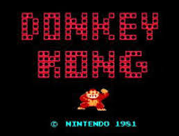
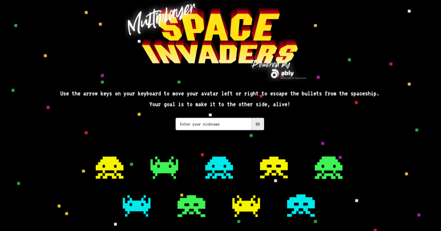
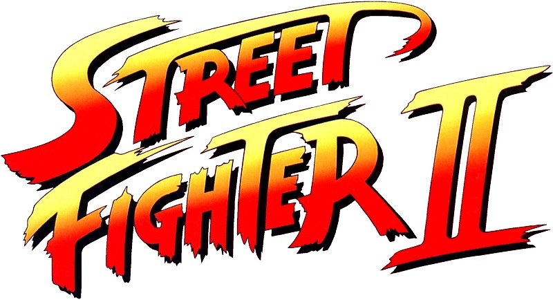
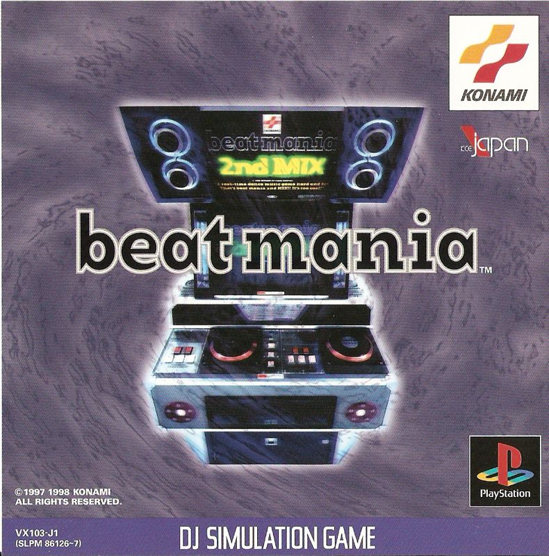
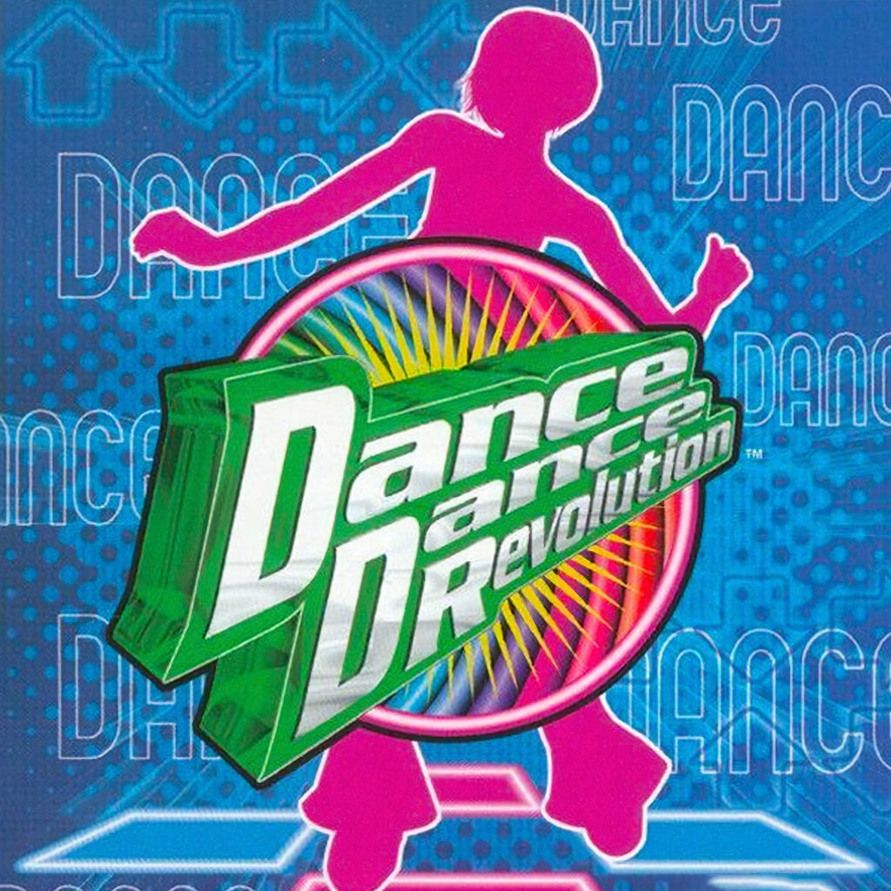
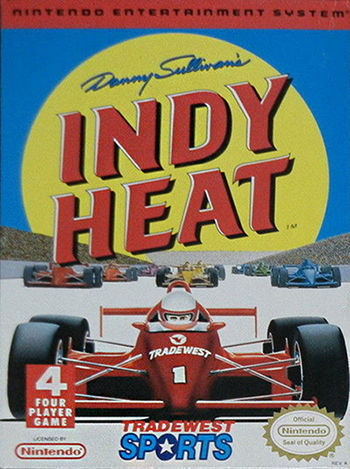
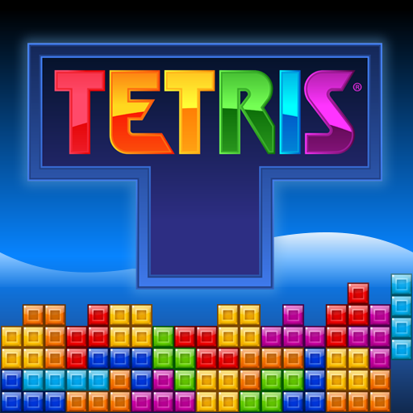
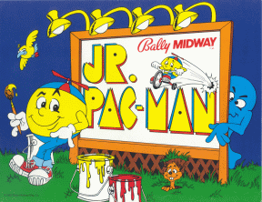
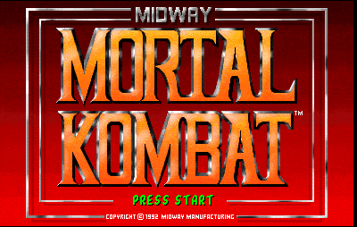

Arcade
Get ready to level up your dining experience! Step into our retro arcade, where the nostalgia is real and the fun is non-stop. With a vast collection of classic arcade games and cutting-edge consoles, our arcade is the perfect spot for gamers of all ages to challenge their friends, relive childhood memories, or simply unwind after a meal. So, grab a quarter (or two, or three...), pick your favorite game, and get ready to play your way to a totally tubular time!
Game Passes
- Basic Pass: 10 tokens ($5)
- Premium Pass: 30 tokens ($10)
- Ultimate Pass: 60 tokens ($20)
Token Pricing per Game
- Classic Games (Donkey Kong, Space Invaders, Tetris, Jr. Pac-Man): 1-2 tokens per play
- Fighting Games (Street Fighter II, Mortal Kombat): 2-3 tokens per play
- Music and Dance Games (Beatmania, Dance Dance Revolution): 3-4 tokens per play
- Racing Games (Danny Sullivan's Indy Heat): 2-3 tokens per play
Special Deals
- Happy Hour:2x tokens for 1 hour (e.g., 10 tokens for $5)
- Tournament Mode:5-10 tokens for a tournament entry fee
- Game Challenges:- 2-5 tokens for a challenge or high-score attempt
Arcade Games
Curious to know what games we have, because at Billi Mac's we dont just sellf food but we also sell fun!
Pac-Man
Description: Pac-Man is a classic arcade game where you control the iconic character Pac-Man as he navigates a maze filled with pellets and ghosts. Your goal is to eat all the pellets while avoiding the ghosts, which will chase you relentlessly. With its simple yet addictive gameplay, Pac-Man has become a beloved character in gaming history.

Donkey Kong
Description: Donkey Kong is an arcade game that introduced two of Nintendo's most iconic characters: Jumpman (later renamed Mario) and Donkey Kong. The game takes place in a construction site where Jumpman must rescue a damsel in distress named Pauline from the clutches of Donkey Kong. You'll need to navigate through obstacles and avoid Donkey Kong's rolling barrels to reach the top..
Cost: 1-2 tokens per play
Space Invaders
Description: Space Invaders is a space-themed shooter game where you control a spaceship that must defend Earth from waves of alien invaders. Your goal is to destroy the aliens before they reach the bottom of the screen, all while avoiding their incoming fire. With its simple yet challenging gameplay, Space Invaders has become a classic in the shooter genre.
Cost: 1-2 tokens per play
Street Fighter II
Description: Street Fighter II is a fighting game that revolutionized the genre with its introduction of combos, special moves, and a variety of playable characters. You'll choose from a roster of fighters, each with their unique abilities and fighting styles, and compete in one-on-one matches against other opponents. With its iconic characters, stages, and music, Street Fighter II has become a beloved game in the fighting genre.
Cost: 2-3 tokens per play
Beatmania
Description: Beatmania is a rhythm-based game where you control a DJ-like character who must press buttons in time with the music. The game features a variety of songs and levels, each with its own unique rhythm and challenges. With its addictive gameplay and catchy music, Beatmania has become a popular game in the rhythm genre.
Cost: 3-4 tokens per play
Dance Dance Revolution (DDR)
Description: Dance Dance Revolution (DDR) is a dance game where you control a character who must step on arrows in time with the music. The game features a variety of songs and levels, each with its own unique rhythm and challenges. With its energetic gameplay and catchy music, DDR has become a popular game in the dance genre.
Cost: 3-4 tokens per play
Danny Sullivan's Indy Heat
Description: Danny Sullivan's Indy Heat is a racing game that puts you in the driver's seat of an Indy car. You'll compete in high-speed races against other opponents, navigating through tracks and avoiding obstacles. With its fast-paced gameplay and realistic graphics, Indy Heat has become a classic in the racing genre.
Cost: 2-3 tokens per play
Tetris
Description: Tetris is a puzzle game where you control a set of blocks called Tetriminos that must be arranged to create solid lines without gaps. The game features a variety of levels and modes, each with its own unique challenges and goals. With its addictive gameplay and timeless design, Tetris has become a beloved game in the puzzle genre.
Cost: 1-2 tokens per play
Jr. Pac-Man
Description: Jr. Pac-Man is a variation of the classic Pac-Man game, designed for younger players. The game features a smaller maze and fewer ghosts, making it easier for new players to navigate. With its simple yet addictive gameplay, Jr. Pac-Man has become a popular game in the Pac-Man series.
Cost: 1-2 tokens per play
Mortal Kombat
Description: Mortal Kombat is a fighting game known for its intense combat and "fatalities" – special moves that allow you to finish off your opponents in gruesome ways. You'll choose from a roster of fighters, each with their unique abilities and fighting styles, and compete in one-on-one matches against other opponents. With its dark atmosphere and over-the-top violence, Mortal Kombat has become a beloved game in the fighting genre.
Cost: 2-3 tokens per play
VR Games
Step into new dimensions at Billi Mac Restaurant's VR gaming zone! Explore our vast library of immersive experiences, from heart-pumping shooters to mind-bending puzzles. Battle zombies in apocalyptic landscapes, explore mysterious worlds, or challenge friends to multiplayer showdowns. Our VR gaming zone features top-of-the-line equipment and a curated selection of the most epic VR games out there. Come and discover new realities!"